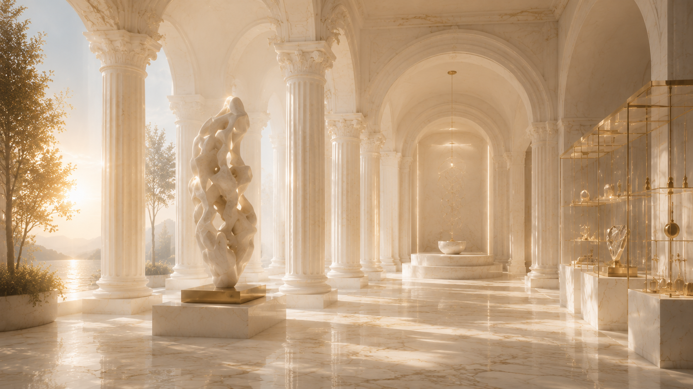
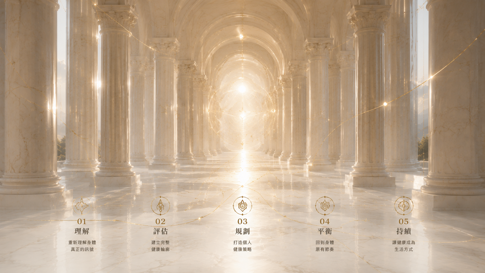

Future Health
GAIAN 整合中西醫學、功能醫學與生活醫學，從根本理解身體的需求，不只治療疾病，而是陪伴每一個人走向真正的健康與平衡。

Integrative Medicine
以整體理解身體，而非只關注單一症狀。GAIAN 整合中西醫學、功能醫學與生活醫學，從根本理解身體的需求，建立不只治療疾病、更陪伴訪者走向真正健康與平衡的醫療模式。
Health Management
從睡眠、壓力、疼痛到營養，建立長期追蹤與調整的健康管理機制，而不是等問題發生才處理。
Health Assessment
透過系統化評估，找出身體真正需要被理解的訊號，作為個人化健康計畫的起點。

Medical Team
GAIAN 匯聚中西醫整合醫療團隊，透過跨專科合作，從身體、心理到生活方式，建立真正適合每一位訪者的健康策略。
此區塊待補正式醫療團隊照片。
Programs
涵蓋以下專項，依個人需求量身規劃：功能醫學、健康管理、睡眠、壓力、疼痛、落髮、女性健康、靜脈營養、醫療設備。